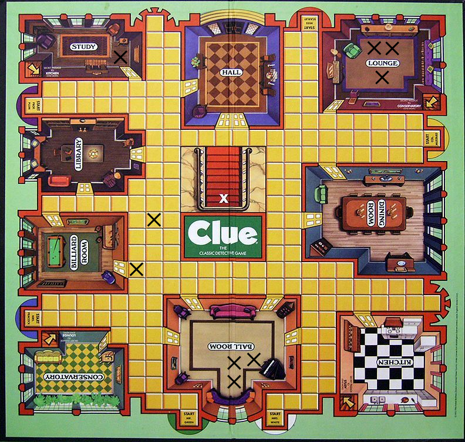
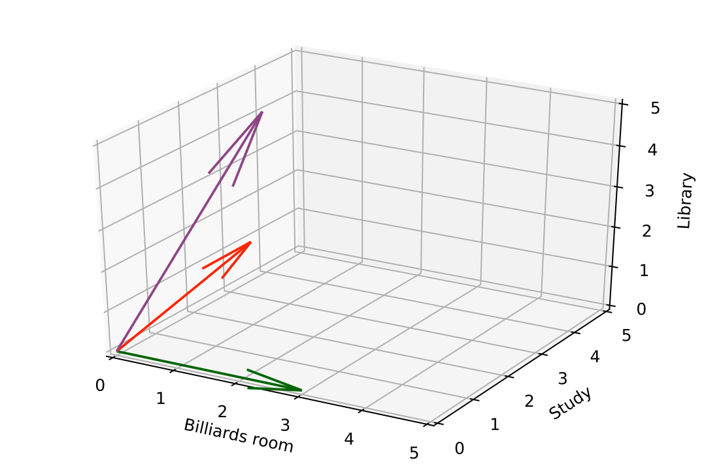

E is for Embeddings
In supervised learning, we have labels which tells us the group(s) a data point belongs to. However, in unsupervised learning (where we don’t have labels) we need to calculate how similar points are from one another. To do this we need to have an embedding which consists of two things:
- A numeric representation of your data (because we need to do math)
- A distance measure (so we can determine how close/far two points are from one another)
Each embedding gives you a different way to look at your data, depending on the features/numeric representation and distance measure you choose.
Let’s solve a mystery
To give you a better idea about what embeddings are, we’re going to look at people hanging out in the Clue mansion. However, instead of solving a murder mystery, we are going to try to determine groups of friends of people in the mansion.

If I asked you to guess which people (shown as X’s) were most likely to be friends in the image above, you’d probably say the people in the ballroom or lounge. This is because they are physically close together. But how can we say they are “close together”? Implicitly in your head you did this using an embedding. You probably looked at the position of people on the board (i.e their x,y coordinates) so we have a numeric representation of the data. We also know that the people in the ballroom are closer to each other than they are to the person standing outside the billiards room. How do we know this? Imagine drawing a line between the person closest to the piano and the person directly to their left. Now imagine drawing another line between the person closest to the piano, and the person just outside the billiards room. The length of the first line is shorter than the second line, so we say that the two people in the ballroom are closer to each other. This method of measuring distance is called Euclidean distance, and it’s probably what you think of first when you need to determine how close/far something is. However, there are other ways to measure distance.
Distance measures
There are many kinds of distance measures (or metrics) but here are a few popular/useful ones. I’ll also describe some additional distance metrics in a later blog.
Euclidean distance
This is just the length of the line drawn directly between two points as we discussed above.
Manhattan/city block distance
Look at the two people outside the billiards room. If you were playing the game and wanted to move one to the other, you could not move them on a straight line between them. You’d have to move 1 over and then 3 up/down for a total of 4 moves. This is similar to Manhattan (also known as city block) distance, which is the sum of the distances in each direction. In the illustration below, the Manhattan distance between the two points is 12. If you were walking you would need to walk 12 city blocks (assuming you can’t walk through buildings), but there are multiple routes you could take. Manhattan distance is useful for higher dimensional data where Euclidean distance breaks down in what is known as “the curse of dimensionality”.

Cosine distance/similarity
Another way we can measure distance is by looking at the cosine of the angles between vectors. To make this more concrete, let’s imagine we have some data on how often people spend time in particular rooms in the mansion.
| Billiards room | Study | Library | |
|---|---|---|---|
| Mr. Green | 3 | 0 | 0 |
| Ms. Scarlet | 1 | 2 | 2 |
| Professor Plum | 0 | 4 | 4 |
In this case, Mr. Green has been in the billiards room 3 times but has never been in the study or library. Looking at these counts we would probably say that Ms. Scarlet and Professor Plum are more similar to each other than they are to Mr. Green. We can think of these counts as vectors in a coordinate system, where instead of an X or a Y axis we have a “Billiards room” or “Study” axis. Below I’ve plotted the vectors below and you can see that the angle between the Ms. Scarlet and Professor Plum vectors is smaller even though the lengths of the vectors are quite different.

Cosine distance lets us say that two things are similar if they have similar sets of “stuff” even if the frequencies (i.e. vector lengths) are different. If two vectors are pointing in the exact same direction, the angle between them is 0 degrees (even if the length of the vectors are different). The cosine of 0 is 1, so we say they have a cosine similarity of 1. To convert this to a distance, we do 1-similarity since we want the distance between perfectly similar things to be 0. If two things are completely dissimilar, the angle between them is 90 degrees and the cosine similarity is 0. One benefit of cosine similarity is that it takes the direction of the vectors into account, where two vectors pointing in the exact opposite direction will have a similarity of -1.
Changing feature sets
Looking at the physical distance between people in the house is one way to try and determine friend groups. There are other ways that you could measure this. For example you could give everyone a survey about their hobbies/interests. The participants put an X if they are interested in a particular hobby, and leave it blank if they aren’t. This would give you a matrix where a 1 corresponds to a X and a 0 corresponds to a blank:
| Board games | Baseball | Dancing | Cooking | |
|---|---|---|---|---|
| Colonel Mustard | 0 | 1 | 0 | 0 |
| Mrs White | 1 | 0 | 1 | 1 |
| Mrs Peacock | 0 | 0 | 1 | 1 |
You could then use cosine distance to determine which people have similar interests to one another. This potentially gives you a different view of your data, where the person in the study is (physically) very far from everyone in the first feature set, but could have interests very similar to other people in the second feature set.
Things to keep in mind
All unsupervised machine learning techniques require an embedding. It’s important to think about which feature set/numeric representation and distance metrics you’re using in order to make sure they will help you answer the questions you’re trying to solve. I find it’s helpful to think about “How do I know if two things are similar? What makes them similar?”.
Many techniques implicitly use a certain distance metric (e.g. k-means clustering uses Euclidean distance). You’ll need to make sure that you’re using a technique that allows you to specify a distance metric, or uses one that is correct for your problem. Additionally, you’ll want to make sure that your features are on the same scale (you may need to do some normalization). For example, if you have some data which includes ratings on a 1-5 scale and other ratings on a 1-100 scale, then that will affect your results. Choosing the right embedding requires thinking about your problem, as well as trying out different feature sets and distance metrics.